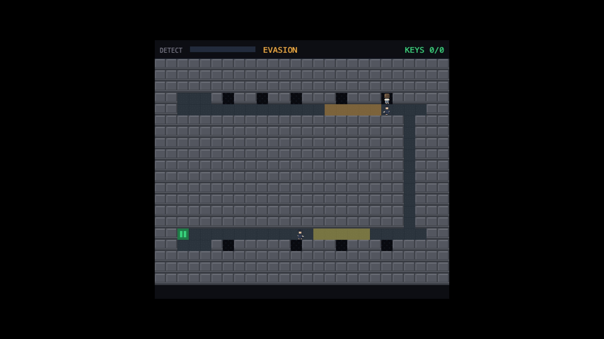
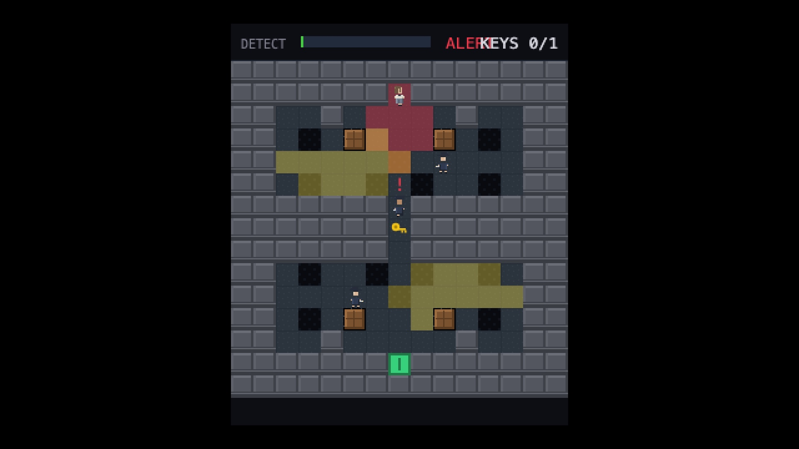
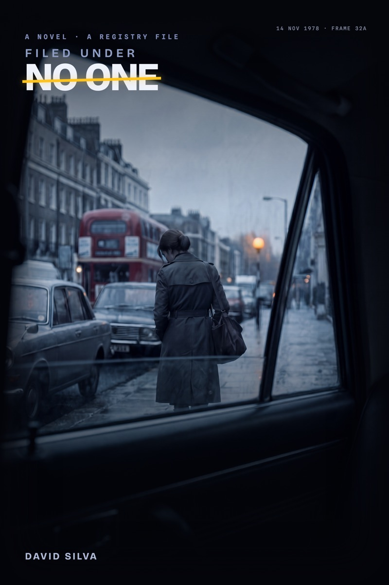

FUNO · the keeper · records floor
FUNO · the keeper · records floor
FILED UNDER
NO ONE
NO ONE
A free browser stealth game and the spy novel it completes.
Top-down stealthFree · no installPlays in browserKeyboard + gamepad2026
FUNO · the keeper · records floor
A free browser stealth game and the spy novel it completes.
The book stops at the fence. The game is the night it won't narrate.
For eleven years, Margaret Vane decided what the country was allowed to see — and what could go unwatched. She drew the blind spots herself. Then she reported a ledger she was never meant to read, and by morning she had been struck from every register that held her name. Filed Under No One is two halves of one story: a novel that walks her to the fence — and a stealth game that is the night she goes back in, to recover the only proof she ever existed.

She kept the country's secrets. The country kept one — about her.


Guards see in hard wedges of light; corners block sight. To win, you are simply never seen.
Step onto a shadow tile and a guard staring straight at you cannot see you. Binary, legible, ruthless.
Fills in under a second of unbroken sight, drains the instant you break it. Fill it and you're taken.
A deliberate knock lures a patrol; a corner radar shows facings — until you go loud and it dissolves to static.
● CALM the patrol keeps its pattern · ● SUSPICIOUS a cone clipped you; a head turns · ● HUNTING seen in full light; the floor goes loud






The only man who would know her if he turned around.
Margaret Vane maps the blind spots of others and never once turned the lamp on her own. Her face is never shown — the work sells the question of who she is now, not a portrait. The Director never leaves his post; the game never shows you whether he turns around.
Entirely procedural — every sound synthesised live in code, even the music; a heartbeat tempo-locked to the meter. Drawn in code, in the playfield: no sprite sheets, no loaded images. Dark grids, pale cones, one rationed amber. The form is the theme.
One story, two media. The novel and the game are a single artefact — the game is the climax the book deliberately won't narrate. Built on a hand-written deterministic engine with zero dependencies: every run a tape you can replay exactly.
Review access, interviews, assets — DMs are open. No email; X is the contact.
@davidslv